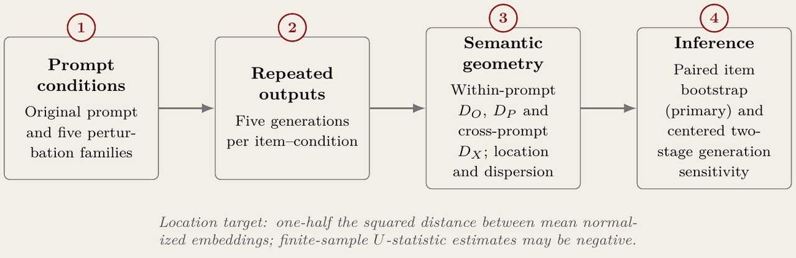
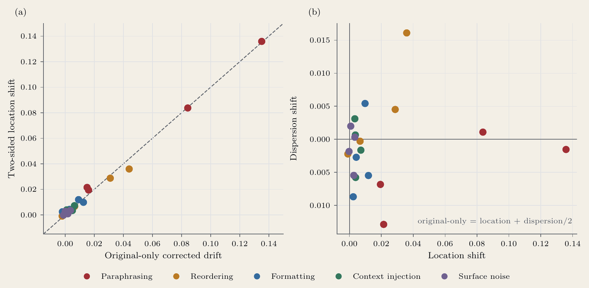
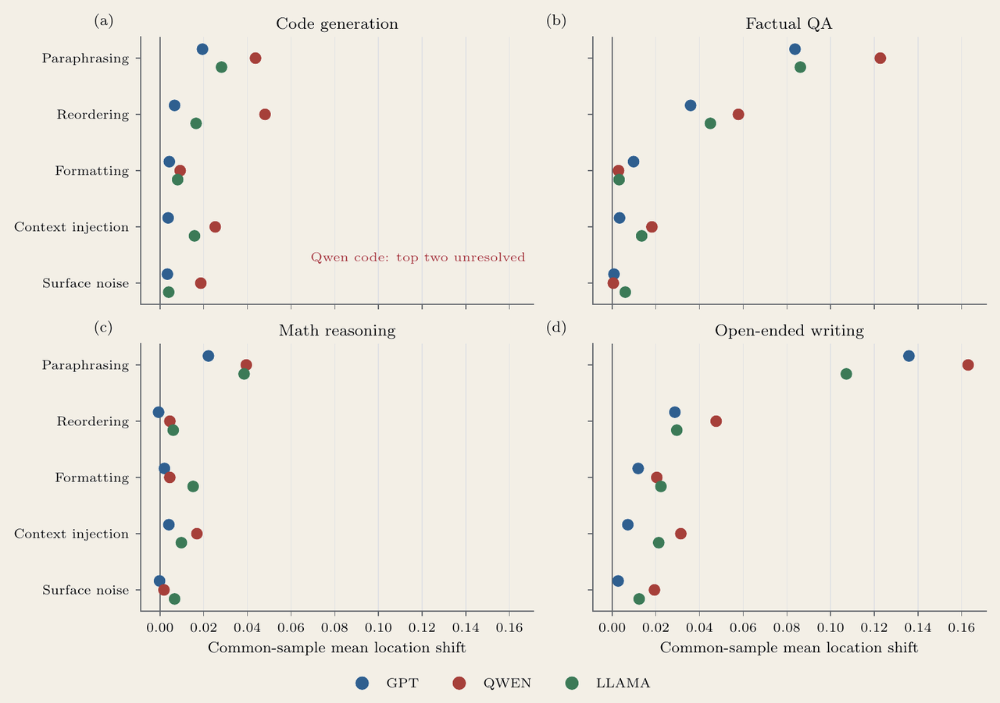
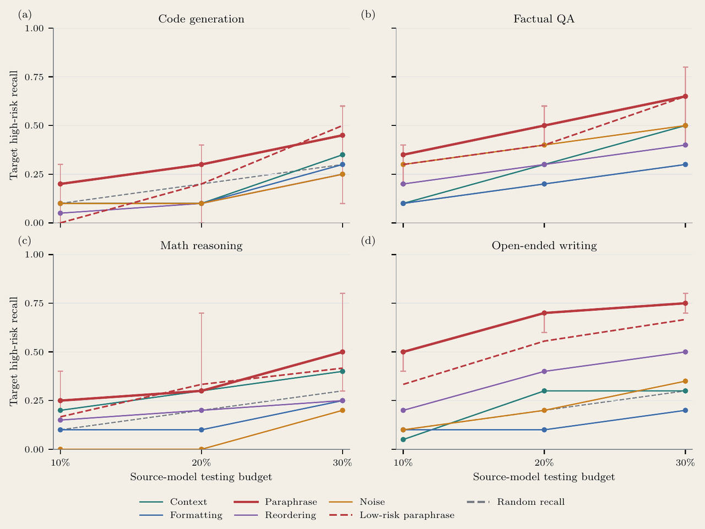

Project 04 of 06
Pioneer Research · LLM output stability · 2025 to 2026
Which prompt change actually moved the model
Ask a language model the same question twice and the answers differ. So when a rewritten prompt produces a different answer, most of that difference is the sampler rather than the rewrite. This separates the two.
Design
Five families of meaning-preserving prompt change, applied to the same 200 items across four task types, five generations per item and condition. Distances are measured in sentence-embedding space, within prompt and across prompts, which gives both where the answers sit and how far they scatter.

| Dimension | Setting |
|---|---|
| Perturbation families | 5 |
| Items per condition | 200 |
| Task types | 4 |
| Generations per item and condition | 5 |
| Models | GPT-4o-mini · qwen-plus · Llama-3-8B |
What the usual correction was mixing together
The standard way to account for sampling noise subtracts a single baseline. That baseline silently combines two different things: how far the centre of the answers moved, and how much wider or narrower they scattered. Those are separate effects and they do not move together.

Left panel: the two corrections agree that paraphrasing is the largest effect, so the ranking is not an artefact of the new formula. Right panel: dispersion moves in both directions and is independent of how far the centre moved, which is the reason for splitting them.
Replication, and the profile where it stops

Paraphrasing leads in every task panel under every model, with one exception: Qwen on code generation. Eleven of twelve profiles agree. The twelfth is not explained, is not averaged away, and is annotated on the figure as unresolved.
A two-stage item bootstrap puts the probability that the top-ranked family is genuinely first at 0.9879, which is high and is not one.
What a cheap first pass catches

If testing every prompt against the expensive model is not affordable, how much high-risk behaviour does a cheap source model catch at 10, 20 and 30 percent of the budget? The curves answer that per task and per perturbation family. They are the most directly usable thing in the paper and the part I would extend first.
Two questions I could not answer
- Why Qwen on code generation ranks differently from the other eleven profiles. No explanation survived checking, so it is reported as an open item.
- Whether the semantic-distance measure tracks what a reader would call a meaningful change in the answer, or only what the embedding treats as distant. This one limits every number above.
Both are written into the paper as failures rather than dropped from it. The second is the more serious of the two.